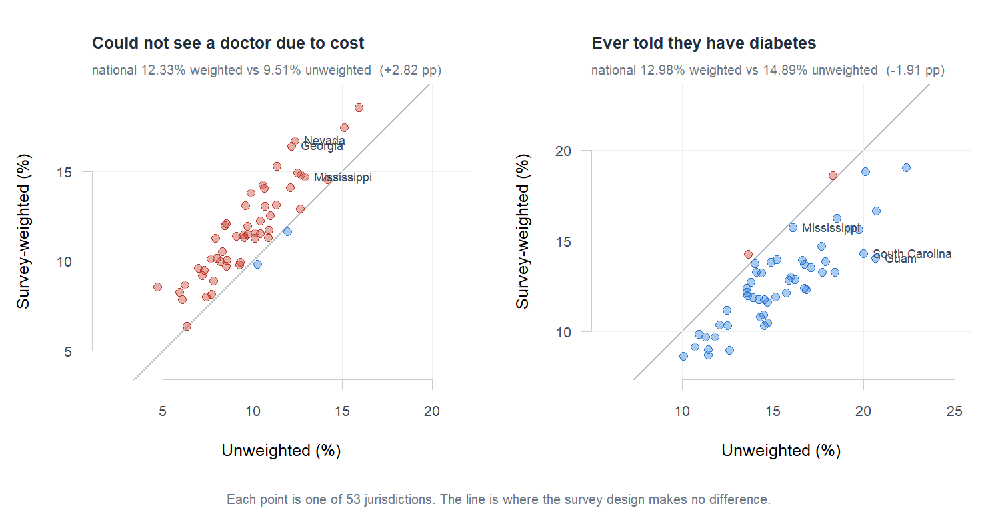

Case study
Population Health Survey Analytics
457,670 CDC survey respondents, estimated twice for the design effect and twice again in R and SAS, which agree on all 108 estimates.

Why the weights exist
BRFSS deliberately oversamples some groups. The weight restores each respondent’s share of the adult population — so unweighted numbers describe the people who answered the phone, and weighted numbers describe the country.
| Measure | Unweighted | Weighted (95% CI) | Gap |
|---|---|---|---|
| Could not see a doctor in the past 12 months due to cost | 9.5095% | 12.3338% (12.11–12.56) | +2.82 pp |
| Ever told they have diabetes | 14.8911% | 12.9807% (12.76–13.20) | −1.91 pp |
The two move in opposite directions, which is the whole point. Ignoring the design understates one measure and overstates the other, so there is no correction factor and no safe rule of thumb — the direction depends on how a measure correlates with who was oversampled. A single measure would have suggested a tidy bias. Two show there is not one.
It changes what a reader concludes
| Cost barrier | Diabetes | |
|---|---|---|
| Median absolute rank shift (of 53) | 5.0 places | 6.0 places |
| Jurisdictions moving 10+ places | 8 | 16 |
| Largest single move | Pennsylvania, −18 | Nevada, +28 |
| Largest difference | Nevada, 4.35 pp | Guam, 6.63 pp |
Mississippi makes it concrete. On diabetes the state reads 16.10% and 20th unweighted, and 15.71% and 6th weighted — same file, same year, a fourteen-place difference in where it sits. A state health department reading the unweighted table would draw a different conclusion about where it stands than the data supports.
Three decisions that carry the estimate
nest = TRUE, and the reason is counter-intuitive. BRFSS numbers its
primary sampling units only within a stratum, so 25,800 of 43,913 PSU
identifiers appear in more than one. Without nesting, the software treats same-numbered units in
different strata as a single cluster: the point estimate still looks fine while the variance is
wrong. A validation check asserts the identifiers really do repeat, so the flag stays justified
rather than copied from a tutorial.
One design per jurisdiction, not svyby. Subsetting a 457,670-row,
43,913-unit design 53 times per measure ran past 25 minutes. Building a design per jurisdiction is
exact, not an approximation, because no stratum crosses a jurisdiction boundary
— which is itself one of the checks — and the step takes 11 seconds.
7 and 9 leave the denominator. “Don’t know” and “refused” appear on nearly every BRFSS question, and folding them into “no” is the most common way to understate a prevalence. Diabetes additionally drops “yes, but only during pregnancy” and “pre-diabetes or borderline” — neither is a yes and neither is a no.
41 checks, two of which matter most
A survey estimate is the kind of number nobody can eyeball. 12.3% and 9.5% look equally plausible, and the difference between them is whether the design was declared correctly. So the checks are not decoration: they are the only thing standing between a correct figure and a confident wrong one.
- The 53 jurisdictions re-weight back to the national figure. Re-weighting each state estimate by its share of total weight reproduces the national number exactly. If the per-jurisdiction shortcut were ever wrong, this is where it would surface.
- Weighting materially changes the estimate. This asserts the project’s own premise. If weighting ever stopped mattering there would be nothing here to report, and the build should say so rather than publish an empty finding.
Two languages, one answer
The same analysis was written twice — once in R with the
survey package, once in SAS with PROC SURVEYFREQ — each declaring the
sampling design independently, both reading the same 1 GB transport file.
measure R SAS difference
cost_barrier 12.3338 12.3338 8.23e-11 agrees
diabetes 12.9807 12.9807 -3.34e-10 agrees
state estimates: 106 of 106 agree (largest difference 4.93e-10 pp)108 of 108 estimates agree to machine precision. The tolerance was set at 0.01 percentage points to absorb the different degrees-of-freedom conventions the two tools use for confidence bounds; nothing came close to needing it.
Extending the comparison past the two national figures is the part that matters. A single number can agree by luck, with two mistakes cancelling. A hundred and six state estimates cannot.
The two tools fail in different places, which is what makes the check worth running:
PROC SURVEYFREQ nests clusters inside strata automatically, so SAS has no equivalent of
R’s nest = TRUE to forget — while SAS will happily treat “don’t
know” codes as ordinary values if the recode is sloppy.
Honest scope
- Self-reported. BRFSS asks; it does not measure. “Ever told they have diabetes” is a question about diagnosis and recall.
- Landline and cellular adults only. People without phones, in prisons, or in nursing homes are out of frame entirely, and weighting cannot fix coverage.
- Two measures, chosen because the design pushes them in opposite directions. They are not a health profile of the country.
- No risk adjustment. Comparing two jurisdictions compares their populations as they are, not like with like.